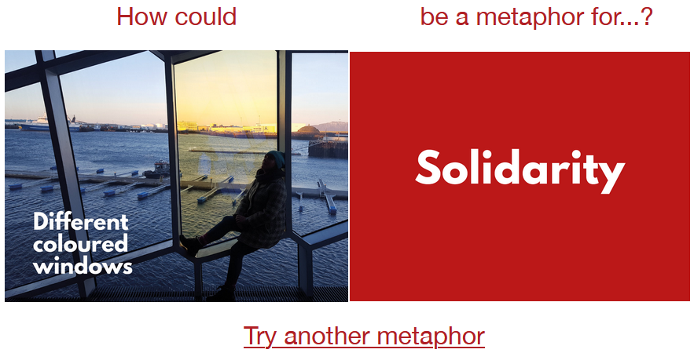

BetterWorld
TL;DR
My Role
Lead UX Researcher
The Team
Daniel Le Compte, Amanda Crawford, Connor Shannon, Thuy-Vy Nguyen, Amanda Piccolini, Janelle Wen, Amy Zhuang
Timeline
September 2020 - Current
Case-Study Client
CMU Against ICE*
* Indicates project is within a course or client did not employ team
Summary
As a team of MHCI students, we are working to deeply understand, through research, how we might assist activist organizations better engage their users for more meaningful and long-term work. We designed a tool, BetterWorld, to combine the powerful effects of visualizing the nebulous work that is activism with a flexible, yet structured format for task and project management and visibility into institutional and group knowledge.
Through a series of focus groups and a range of interviews with Subject Matter Experts, End-Users, as well as leaders of organizations, We utilized a focus group approach to understand the general problem space and refine our research questions. Then we conducted an initial round of generative research to learn more about X, Y, and Z, through a Literature Review and qualitative interviews with two groups of users: End-Users who are users of these activist organizations, and stakeholders who are the leaders and organizers of these organizations.
From here, we had a sufficent depth of understanding to begin thinking about how we might address our research questions and craft a design that would benefit the end-users. Through a series of brainstorming processes, rounds of feedback and critique, as well as iterative testing and re-design, we created BetterWorld.
Some users of the team are taking this project and work so far and expanding on it through a case-study approach to creating an MVP and disseminating further research.
Deliverables (From work September - December 2020)
Problem Space And Context
This project was situated within the a semester long course, where we were challenged with a student-defined project to apply persuasive techniques learned in Geoff Kaufman’s Persuasive Design class at Carnegie Mellon University, within the Human-Computer Interaction Institute. Our team focused on civic engagement with the goal of maintaining and increasing engagement among members of activist organizations. I found this topic area to be highly intriguing and right in the center of my interests to use my skills for projects, designs, and solutions that benefit others in the long-run. To understand and support activist work, we work towards addressing inequities systematically.
"How might we strengthen and increase engagement of actively participating members in social activist groups by encouraging them to stay involved longer in ways that work for them?"
Activism happens on a long-term scale, with work taking months or years to achieve desired results, and progress is often difficult to measure. In order to more effectively work towards their shared mission, activists need tools that encourage sustainable, long-term engagement. They need a solution that helps effort compound over time rather than die off, as well as more visibility into institutional and group knowledge.
Process
We utilized a broad set of methods to initially ground us in the problem space, formulate our above problem statement, and hone in on an actionable set of user needs:
Generative research using the "New Metaphors" activity in focus groups to better understand the broader context of volunteering and social justice activism
Through a series of in-depth interviews with members of activist organizations as well as leaders of these orgs, hone in on an actionable problem that would substaintially benefit the organization and their long-term efforts
Rapidly sketch many potential solutions and systematically evaluate each to hone in a few, solid ideas that address the problem at hand
Test a few ideas by putting them in front of our target users (members and leaders), gather feedback from a diverse group of stakeholders, and pick the most promising and effective solution
Iteratively improve on this one solution through multiple rounds of testing, feedback, and increasing fidelity while honing in on a key set of features that directly benefit the users
Initial set of Research
Generative research through the New Metaphors activity Focus Groups
The New Metaphors activity is a fantastic way to collect generative research and insights about our research area, covering a large amount of ground in a short amount of time through first-hand reporting and discussion. This also is a fantastic way to garner empathy with our participants by hearing the problems and issues they face on a regular basis. This research also helped us narrow in our scope and target user groups for the remaining research.
Initial Interviews (Domain experts, end users, and community leaders)
We conducted primary research through extensive interviews to help us understand the problem space, critically analyze end-user needs and constraints, as well as understand how we might work within the processes of these organizations. We interviewed local organization leaders, academic researchers working in a similar space of activist organization, as well as several end-users to understand their wants, needs, desires and constraints. I led efforts of designing the research questions and interview questions for these sessions.
(Mini) Literature Review
A survey of academic literature across the fields of online communication, activist motivation and organization, as well as persuasive theories, helped us base our future research as well as our eventual design on substaintial previous evidence and work.
Usability testing and iterative design
Once we understood the problem space thoroughly, we ideated through three iterations of our prototype, with each round having end-users and leaders of organizations provide feedback, as well as going through usability testing with common user tasks. I led the main efforts of designing tasks and user scenarios for testing, as well defining usability metrics.
Prototyped Solution
[This is work as of December 2019] The platform we designed incorporates persuasive techniques to help organizations visualize their progress. Our goal was to create an engaging virtual platform that could help organizations like CMU Against ICE facilitate team collaboration and intragroup connections. BetterWorld is organized into five main sections: World, Community, My Info, Projects, and Check Ins. Together, these sections create an intuitive hierarchy and flow, one that would promote group identity while affirming and aligning individuals with the group.
Feel free to explore our prototype at bit.ly/BetterWorldPrototype
World and Personal View
Users are able to visualize their group and personal contributions to the project. Current and finished projects are manifested into structures or items of the users’ choosing. With the ability to customize the items’ names and appearance, these may be tangible indicators of the organization’s group identity.
Community Pages
The Community page is a directory of all members within the organization. Members can learn about other members and the areas they are interested in. Members may also give “shout-outs” on virtual post-its that affirm and encourage others in their contributions.
Tasks and Projects
The Tasks page is designed to emphasize collaboration over individual work. This highlights group identity and uses social proof by making clear who is contributing and encouraging users who have not yet contributed to participate more.
Check Ins
We designed both group and individual check in pages that incorporate group- and self-affirmations. These techniques have been shown to help individuals with motivation and make them more equipped to deal with hardships they may face in activism work.
Going Forward
We are excited to expand on this work so far with further research in the spring semester. We aim to partner with an organization to collaboratively iterate on this design, implement a MVP that can be used, and test the effectiveness of the implementation and improve. This will include further refined interviews and other methods of assessing potential features and design ideas, such as "Buy-A-Feature" and Card Sorting. Lastly, we plan on disseminating this work as a workshop or conference paper to the HCI community.